地政学
ワディ・ムーサ／ペトラはヨルダン南部の山地にあり、紅海、アラビア砂漠、レバントを結ぶ古い交易路の記憶を抱える。今日も国境観光、王国の文化外交、地域雇用の期待が集中し、遺跡管理は国家の顔になる町でもある。

🇯🇴 ヨルダン / マアーン県 / World City Atlas
砂岩の峡谷と岩窟都市の入口にある町は、ナバテア王国の記憶、砂漠観光、ベドウィンの移住、宿泊産業、水利の知恵、保全の緊張を日常の坂道に重ねている。
都市の骨格
ワディ・ムーサはペトラ遺跡の玄関であると同時に、学校、ホテル、土産物店、住宅、タクシー、家族経営の食堂が集まる町である。峡谷の劇的な景観と、観光に揺れる日常の経済が同じ谷口で交わる。
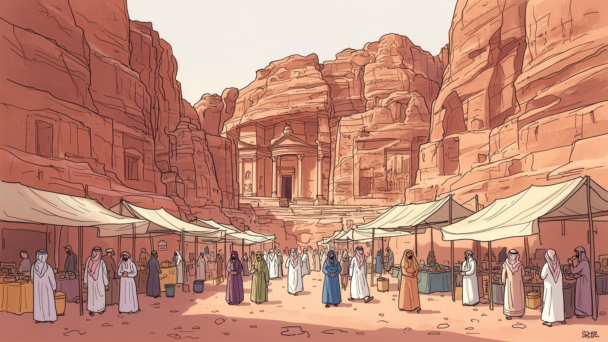
ワディ・ムーサ／ペトラはヨルダン南部の山地にあり、紅海、アラビア砂漠、レバントを結ぶ古い交易路の記憶を抱える。今日も国境観光、王国の文化外交、地域雇用の期待が集中し、遺跡管理は国家の顔になる町でもある。
町の雇用はホテル、ガイド、土産物、乗り物、飲食、清掃、保全、交通に強く依存する。来訪者の増減は家族経営の店や若者の仕事へすぐ響き、観光収入の季節性が暮らしの計画を左右する重要な街である今なお続く。
ナバテアの岩窟墓、イスラムの生活暦、ベドウィンの部族記憶、巡礼ではない観光の儀礼が重なる。祈り、客人を迎える作法、婚礼、家族の名誉、遺跡への語り方が、町の文化を形づくっている大切な基盤である今も。
旅行者はシークから宝物殿へ向かうが、住民は学校、診療所、市場、ホテルの勤務、家族の送迎を行き来する。観光の華やかさの裏で、水、住宅、物価、混雑、遺跡保全が日々の重要な課題として残り続ける町である。
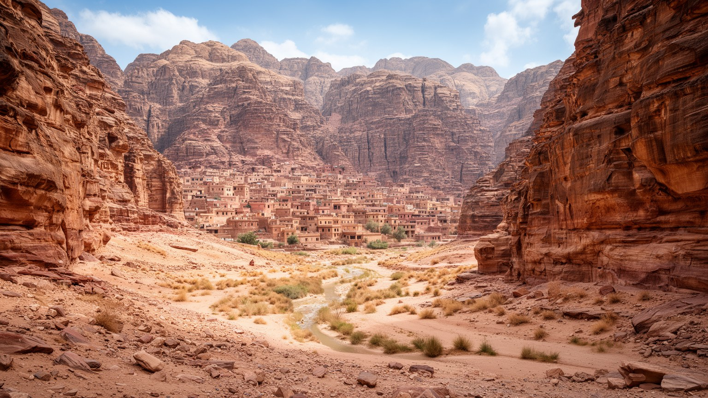
ワディ・ムーサ／ペトラを読む出発点は、砂漠と山地が急に折り重なる地形である。町はヨルダン南部の高地にあり、広い平野ではなく、ワディと呼ばれる涸れ谷、砂岩の斜面、曲がりくねった峡谷、尾根上の道路に沿って発達してきた。ペトラ遺跡へ向かう入口は、シークという狭い岩の裂け目を通ることで劇的に演出されるが、この地形は観光の舞台である前に、水、移動、防御、交易を左右した都市の条件である。雨は少ないが、降る時には谷を急流に変え、古代の水路や現代の排水管理を重要にする。昼夜の温度差、冬の冷え、夏の乾きは、建物の厚い壁、日陰、屋上、店先の時間を決める。周囲の道はアカバ、マアーン、アンマン、ワディ・ラムへつながり、ペトラを孤立した遺跡ではなく、南ヨルダンの交通と観光の結節点にしている。地形を理解すると、宝物殿だけでなく、谷口のホテル街、坂の住宅地、駐車場、観光バスの動線、ベドウィンの移住先まで一つの都市構造として見えてくる。さらに、谷の向きは朝夕の光と人の流れを変え、遺跡を歩く時間帯、店が開く場所、救急車が入れる道まで左右する。砂岩の色は美しいが、崩れやすさも持つため、地形そのものが都市の魅力と危険を同時に作っている。地形は観光客の感動を作るだけでなく、住民がどこに住み、どの道で働きに出るかを決める現実でもある。
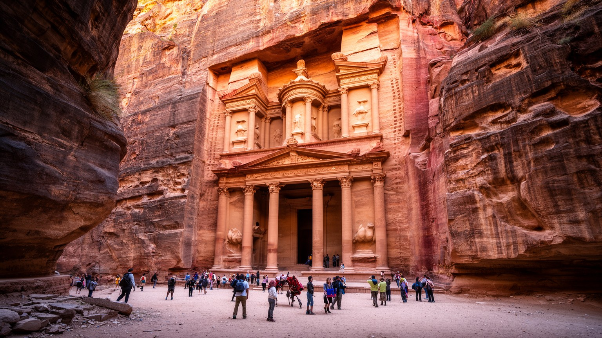
ペトラの中心にあるのは、ナバテア王国が砂岩の断崖へ刻み込んだ都市の記憶である。宝物殿、王家の墓、劇場、列柱道路、祭壇、修道院と呼ばれる巨大な岩窟建築は、単なる石の装飾ではなく、隊商交易、宗教儀礼、王権、ローマ世界との接触を示す都市の断片である。香料、乳香、没薬、金属、織物、家畜、人の移動が砂漠の道を通り、ペトラは防御しやすい谷と水利技術を背景に繁栄した。岩の正面はギリシャ・ローマ風の意匠を取り込みながら、内部は墓や祭祀空間として使われ、外来の形と地域の信仰が混ざる。今日の訪問者は写真で一つのファサードを消費しがちだが、都市としてのペトラは谷、階段、広場、墓地、水路、住居跡、神殿が連続する広い遺産である。崩れた石、風化した彫刻、踏み固められた道は、長い時間の中で都市が使われ、捨てられ、再発見され、観光化された過程を語る。ペトラの遺産を見ることは、古代の栄光を眺めるだけでなく、交易が都市を作り、気候と水が権力を支え、現代の保全がその記憶をどう守るかを考えることである。岩窟の規模に圧倒されるほど、そこを支えた職人、荷役、商人、神官、農民の姿は見えにくくなる。遺産を都市として読む視点は、石の正面の奥にいた多くの人の仕事を想像させる。その想像が、ペトラを単なる絶景から社会を持った古代都市へ戻してくれる。
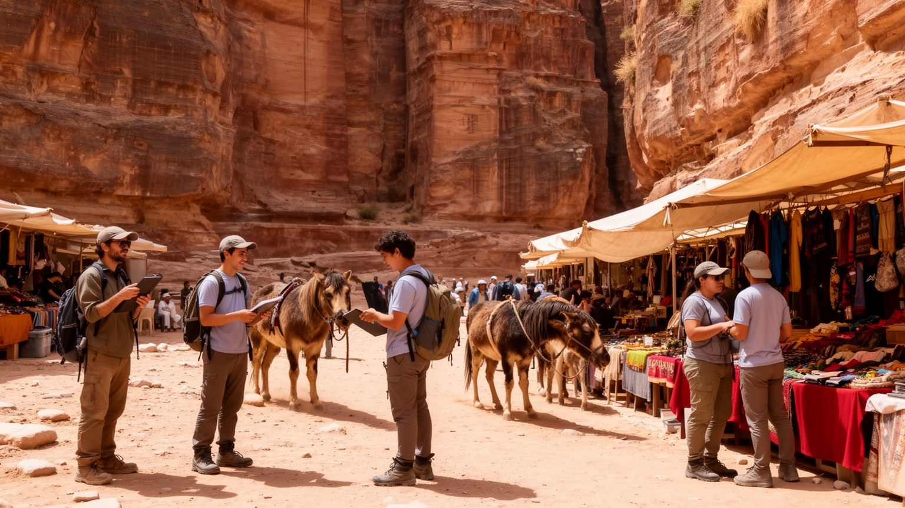
ワディ・ムーサの経済は、ペトラを訪れる人びとの波に大きく左右される。ホテル、ゲストハウス、レストラン、土産物店、ガイド、タクシー、バス、乗用動物、清掃、警備、遺跡保全、入場管理まで、多くの仕事が観光の時間割で動く。朝早くシークへ向かう団体、昼の暑さを避ける個人旅行者、夕方に戻る客の流れは、店の仕入れ、従業員の勤務、家族の収入を決める。国際情勢、燃料費、航空便、感染症、地域の治安不安があると、来訪者は急に減り、町の小さな事業者は在庫と固定費を抱える。観光は地域に収入をもたらす一方、仕事を季節的で不安定にし、若者の職業選択を遺跡周辺に偏らせることもある。客を呼び込む競争は時に強引な売り方や価格交渉を生み、旅行者との摩擦にもなる。持続的な観光には、地域のガイドを選び、地元の宿や食堂を使い、短い写真だけでなく町に時間を落とす態度が必要である。ワディ・ムーサを読むことは、世界遺産の美しさの背後にある受付係、料理人、運転手、職人、清掃員、保存専門家の労働を読むことでもある。観光の仕事は語学や接客力を育てるが、社会保険、休暇、閑散期の収入、女性の働き方には課題も残る。華やかな入口のそばで、安定した生活をどう作るかが町の大きな問いである。収入が一つの産業に偏るほど、教育や小規模事業の選択肢も重要になる。
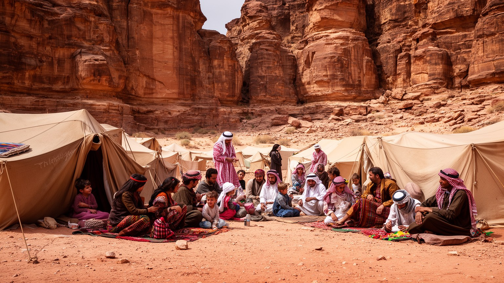
ペトラの風景には、ベドウィンの記憶が深く刻まれている。遺跡の洞窟や周辺の谷で暮らしていた家族は、保全政策と観光開発の中で集落へ移住し、生活の場所、家畜の扱い、親族関係、遺跡との距離を変えてきた。観光客に見えるベドウィン像は、砂漠の衣装、茶、乗り物、手工芸、写真の被写体として単純化されやすいが、実際には部族の記憶、土地への権利感覚、国家との交渉、教育、都市的な消費、若者の就職が重なっている。遺跡の中で店を出し、動物を扱い、道を案内し、物語を語る人びとは、文化を演じているだけではなく、移住後の経済を組み立てている。洞窟の暮らしを懐かしむ語りには、自由と貧しさ、共同体と不便さ、保全と排除の矛盾が含まれる。旅行者が短い会話で出会う人物の背後には、家族の歴史、学校教育、観光収入への依存、季節ごとの不安がある。ペトラを読む時、ベドウィンを遺跡の装飾として扱うのではなく、世界遺産化によって生活を変えられた住民として見る必要がある。彼らの記憶は、ペトラが古代都市であるだけでなく、今も人が場所との関係を作り直す現代の空間であることを示している。保全と観光の制度を考える時には、誰が語る権利を持ち、誰が収入を得て、誰の記憶が商品化されるのかを問う必要がある。記憶を聞く姿勢が、観光を一方通行にしない道となる。
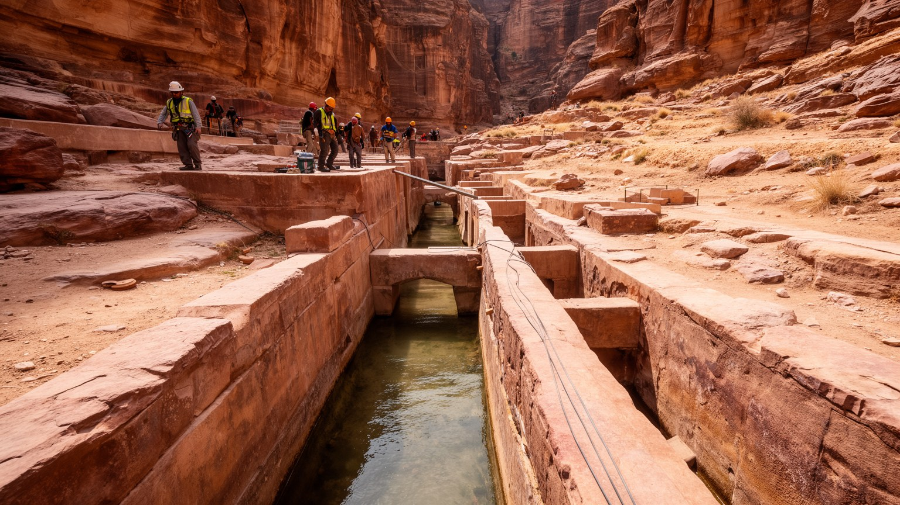
ペトラの都市性を支えた最大の技術は、水を集め、逃がし、貯め、配る仕組みである。年間降水量の少ない砂漠高地でありながら、ナバテア人は涸れ谷の洪水を読み、ダム、水路、陶管、貯水槽、沈殿池、段畑を組み合わせて、都市、神殿、庭園、隊商の需要に応えた。狭いシークの両側に残る水路は、観光客の視線では見過ごされやすいが、岩を刻む建築よりも都市の存続に直結している。雨が急に降ると水は谷を激しく流れ、古代にも現代にも危険をもたらす。そのため水利は豊かさの源であると同時に、防災の知恵でもあった。現在のワディ・ムーサでも、水の確保は暮らしと観光の大きな課題である。ホテルのシャワー、レストラン、清掃、植栽、住民の家庭用水は、乾燥地の限られた資源を分け合う問題を生む。気候変動や観光客の増加は、この負担をさらに強める。ペトラの水利を読むことは、古代技術を賞賛するだけでなく、乾いた地域で都市を維持するために必要な節水、配分、防災、保全の課題を考えることである。砂岩の華やかな正面の奥には、水をめぐる設計と政治があり、それがペトラを単なる遺跡ではなく、環境に適応した都市として成立させていた。水の跡を追うと、見どころの順路とは別の都市地図が現れる。そこでは谷の勾配、石の継ぎ目、貯水槽の位置が、かつての暮らしと権力を語っている。
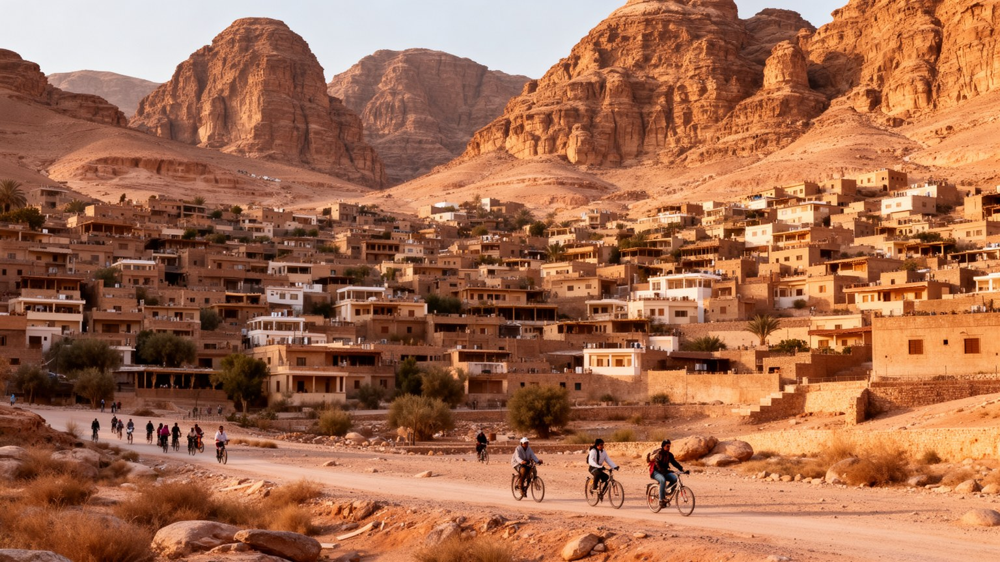
ワディ・ムーサは、遺跡へ向かう通過点ではなく、住民が家を建て、学校へ通い、仕事へ出かけ、親族と会う生活都市である。斜面に沿う住宅、ホテル街、商店、学校、モスク、行政施設、診療所、駐車場は、観光客が数時間で通り過ぎる動線の外側にも広がる。家族経営の宿や食堂では、住まいと仕事の境界が近く、親族の手伝い、季節雇用、若者の英語力、女性の家庭内労働が町の経済を支える。観光需要が高まると土地や建物の価値は上がるが、住民にとっては家賃、物価、交通、騒音、廃棄物、公共空間の不足という負担にもなる。坂の多い町では、車が生活に欠かせず、子どもや高齢者の移動は家族の送迎に頼る場面が多い。観光客向けの新しい施設が増える一方、住民のための公園、図書館、安定した雇用、医療、職業教育も必要である。町の未来は、ペトラへの近さだけでなく、住民がここで学び、働き、結婚し、老いることができるかにかかっている。ワディ・ムーサを読む時には、遺跡ゲートの前だけでなく、丘の上の住宅地、夕方の商店、学校帰りの道、ホテルの裏手にある洗濯物や駐車場まで見る必要がある。そこに、世界遺産を支える普通の暮らしがある。住宅地の視点から見ると、観光の成功は部屋数や客数ではなく、若い世帯が町に残れる賃金、学び直しの機会、安心して歩ける道があるかでも測られる。
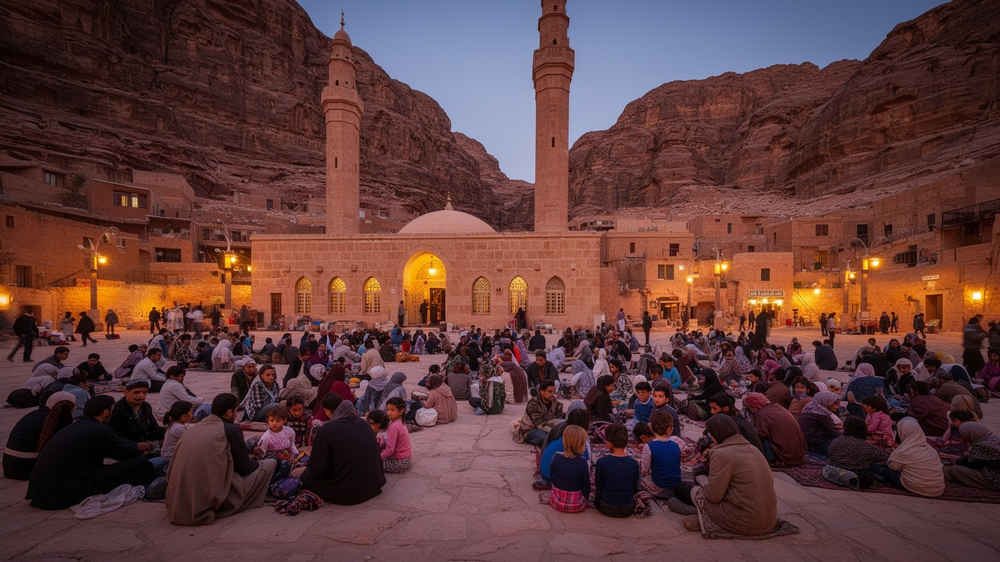
ワディ・ムーサの日常には、イスラムの礼拝、ラマダン、イード、結婚式、葬儀、家族訪問、客をもてなす作法が深く組み込まれている。ペトラは古代の多神教やナバテアの祭祀を語られる場所だが、現在の町を動かす時間は、モスクの呼びかけ、学校と仕事の予定、家庭の食事、親族の義務によって整えられる。観光客の多くは昼間の遺跡に集中するため、夕方の礼拝、断食明けの食卓、婚礼の車列、親戚を迎える茶の時間を見落としやすい。宗教は個人の信仰だけでなく、商売の信用、近所づきあい、困った時の助け合い、家族の名誉とも結びつく。ラマダン中には営業時間や食事のリズムが変わり、観光産業もそれに合わせて働き方を調整する。古代遺跡の神殿や墓は過去の宗教を物語るが、その隣で続く現代の信仰は、町が今も生きていることを示している。訪問者にとって大切なのは、遺跡を鑑賞する視線だけでなく、住民の礼拝や家族生活を尊重する態度である。ワディ・ムーサの宗教と儀礼を読むことは、ペトラを時間の止まった古代の舞台ではなく、過去の聖性と現在の生活暦が重なる都市として理解することである。客を迎える茶や挨拶は、観光向けの演出である前に、共同体の礼儀でもある。そこには、旅人を受け入れながら自分たちの生活の節度を守る知恵がある。遺跡を訪れる時間と町の祈りの時間が重なる時、観光地ではなく住民の町にいることがはっきり分かる。
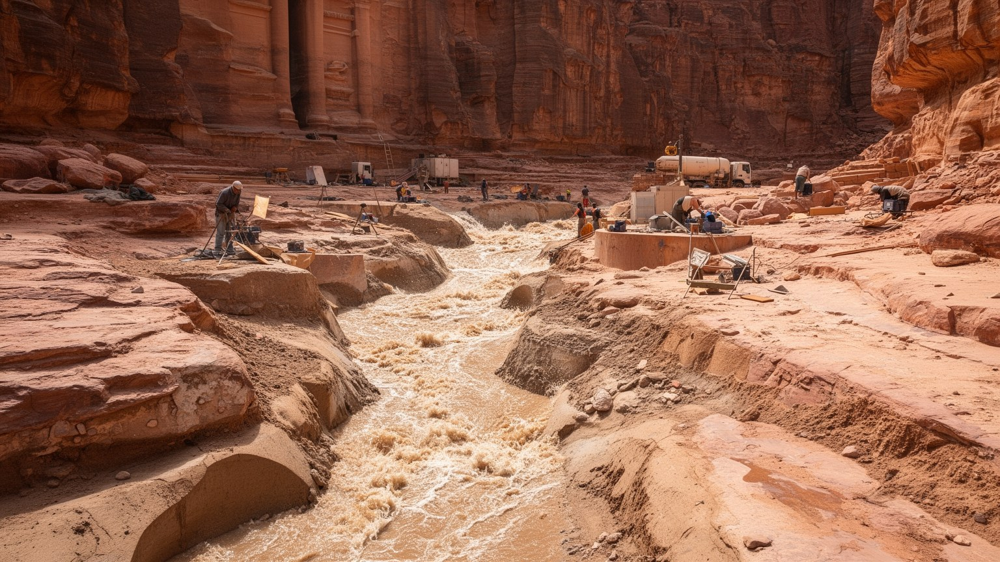
ペトラの美しさは、壊れやすい砂岩の上に成り立っている。風、雨、温度差、塩分、洪水、人の接触、動物の通行、振動、排水不良は、岩窟の表面を少しずつ削り、色彩や彫刻を変えていく。観光客が増えるほど、踏み固められる道、触られる壁、増える廃棄物、必要になるトイレや案内、救急対応が遺跡に負荷をかける。保全は建築の修復だけではない。動線を管理し、危険な谷を監視し、地元の仕事を守り、研究者、行政、観光業者、住民の利害を調整する作業である。気候変動によって豪雨の強さや乾燥の周期が変われば、古代水路と現代インフラの両方が試される。入場者数を増やせば収入は伸びるが、遺跡の摩耗も進む。制限を強めれば保存にはよいが、観光で暮らす人の収入に影響する。ここにペトラの難しさがある。世界遺産としての価値を守るには、来訪者が短い写真のために岩に触れすぎないこと、地域が保全の仕事から収入を得ること、水と廃棄物の管理を改善することが必要である。ペトラの保全を読むことは、古代都市を未来へ残すために、観光の自由と環境の限界をどう折り合わせるかを考えることである。保存の判断は専門家だけの問題ではなく、店主、ガイド、若者、移住した家族にも関わる。守る対象が生活の場と重なるからこそ、対話の制度が欠かせない。日々の小さな管理が遺跡の寿命を延ばし、町の信頼も支えていく。
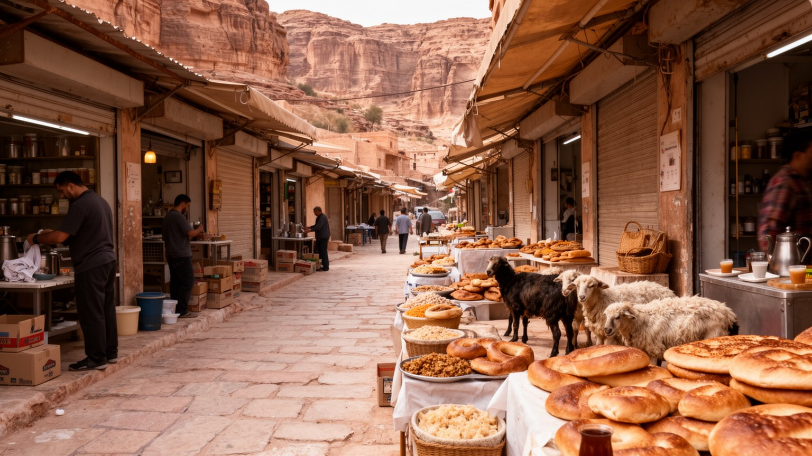
ワディ・ムーサの食は、観光客の休憩と住民の日常をつなぐ入口である。遺跡を歩いた後の甘い茶、ヨルダンのパン、フムス、ファラフェル、マンサフ、グリル料理、ナツメヤシ、スパイス、家庭の米料理は、乾いた高地で体を整える実用的な食でもある。ホテルのビュッフェや観光客向けレストランが目立つ一方、住民が使う小さな食堂、パン屋、食料品店、野菜売り場には、町の生活のリズムが残る。食材は周辺地域や大都市から運ばれ、観光の繁忙期には仕入れと価格が変わる。ラマダンやイード、婚礼、家族の来客では食卓の意味が変わり、もてなしは地域の誇りを示す大切な行為になる。観光客が急いで昼食を済ませる場所にも、料理人、配膳、洗い場、仕入れ、家族の手伝いという労働がある。市場や店先での会話は、ホテルの案内には出にくい町の情報を伝える。水の限られた地域で食堂を動かすことは、清掃、調理、廃棄物の管理とも切り離せない。ワディ・ムーサを食から読むと、ペトラ観光は遺跡を見る体験だけでなく、乾燥地の生活、客人を迎える文化、家族経営の経済を味わう時間になる。皿の上には、砂漠の気候、観光の季節性、地域のもてなしが同時に載っている。食堂で交わす短い挨拶や値段の相談は、遺跡の外にある町の関係を教えてくれる。食は観光を日常へ戻す手がかりである。店の匂いも記憶になる。
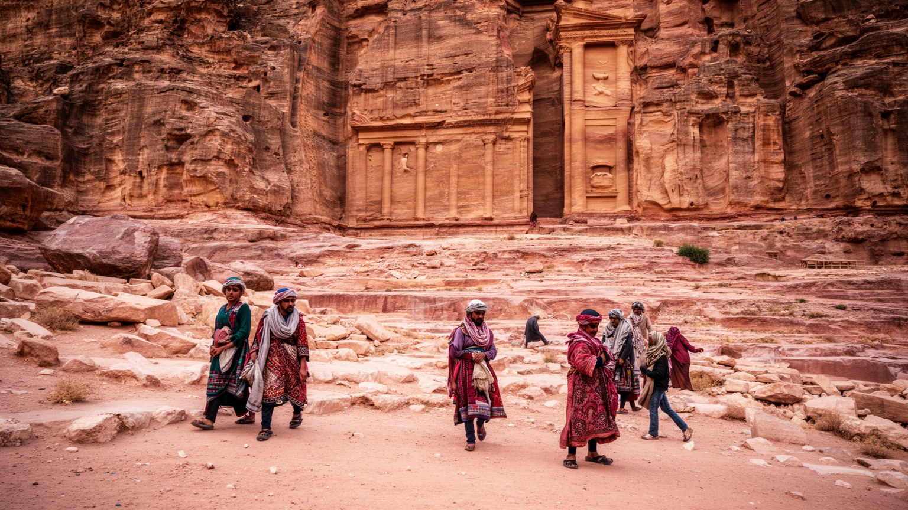
ワディ・ムーサ／ペトラは、世界的には古代都市ペトラの名で知られる。しかし都市として読むなら、宝物殿の正面だけで完結しない。砂岩の峡谷、ナバテアの水利、交易路、ベドウィンの移住、ホテル街、学校、食堂、土産物店、モスク、保全事務所、観光バスの駐車場が、同じ谷口で互いに依存している。ペトラの遺産はヨルダン国家の文化的な顔であり、地域住民の収入源であり、同時に壊れやすい環境資源でもある。来訪者が増えれば町は潤うが、水、廃棄物、混雑、砂岩の摩耗、住民の生活空間への圧力も増える。観光が止まれば、家計と若者の将来が不安定になる。だからこの場所の核心は、古代と現代、保存と生活、世界の視線と地域の権利をどう折り合わせるかにある。シークを抜けた驚き、丘の住宅地の夕方、店主の呼び声、ベドウィンの記憶、水路の跡を同じ地図に置くと、ペトラは記念写真の背景ではなく、現在も調整を続ける都市として立ち上がる。ワディ・ムーサ／ペトラを深く見ることは、世界遺産を守る責任と、その遺産のそばで暮らす人びとの未来を同時に考えることである。都市の価値は、遺跡の壮大さだけでなく、そこから得た収入が教育、住宅、水、保全、地域の誇りへ戻るかで決まる。旅行者のまなざしも、その循環の一部になる。古代の石と現代の暮らしを切り離さず見る時、この場所の重みが最もよく分かる。